Directory
Mathematical Sciences
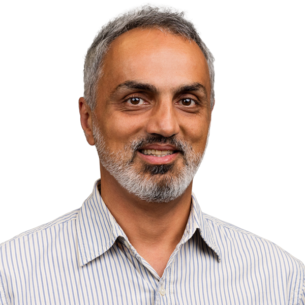
Shahriar AfkhamiProfessorComputational Fluid MechanicsScientific Computing and Parallel ComputingComplex FlowsComplex FluidsSener AlptekinUniversity LecturerEgbert AmmichtAdjunct Instructor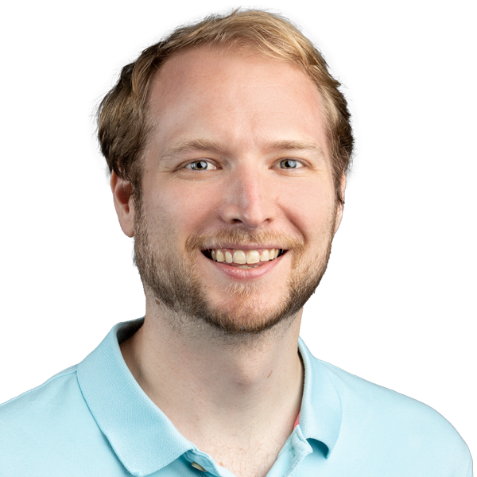
Travis AskhamAssistant ProfessorNumerical analysisScientific ComputingFast AlgorithmsJohn BechtoldProfessorApplied mathematicsCombustionHooman BehzadpourAdjunct InstructorGeorge BekhitAdjunct Instructor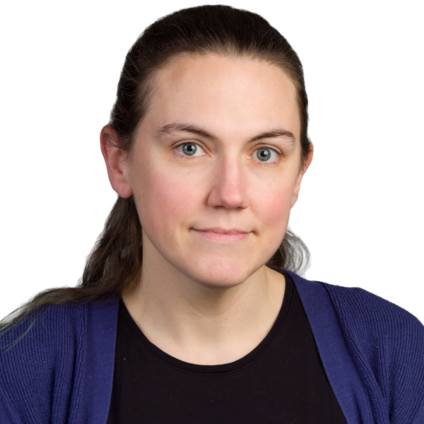
Sarah BlansetSenior University Lecturer Michael BootyProfessorI work in various areas of physical applied mathematicswhereApplied mathematicsAmitabha BoseProfessorPrianka BoseAdjunct Instructor
Michael BootyProfessorI work in various areas of physical applied mathematicswhereApplied mathematicsAmitabha BoseProfessorPrianka BoseAdjunct Instructor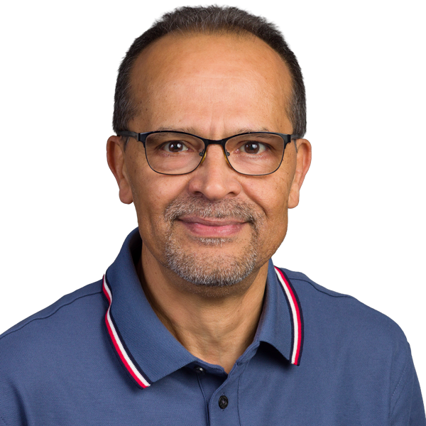
Rachid BouayadUniversity LecturerYassine BoubendirProfessorTrang BuiSenior University LecturerBruce BukietProfessorMathematical modeling of physical phenomenaincluding biological applicationsfluid dynamics and sportsMathematical modelingManasse CadetAdjunct Instructor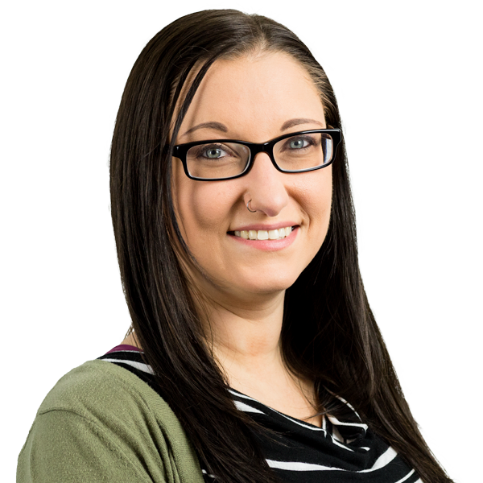
Kristin CarforaUniversity LecturerSunletha CarterAdjunct Instructor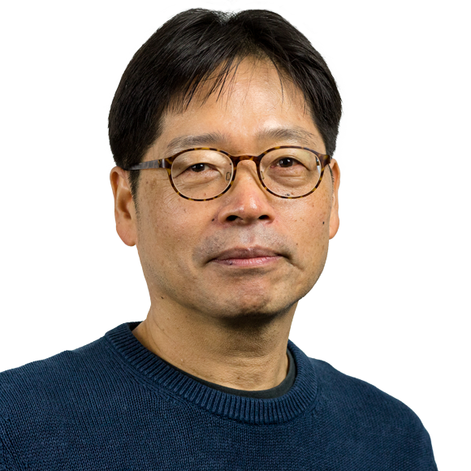
Wooyoung ChoiProfessorApplied Mathematics: Nonlinear waves and Fluid mechanicsMichelle CirilloProfessordiscourseproofgeometrymodeling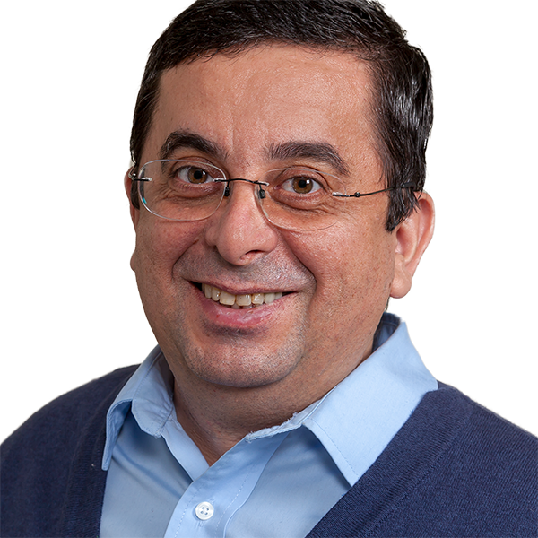
Ion CohanoschiAdjunct InstructorPaul CorreiaAdjunct Instructor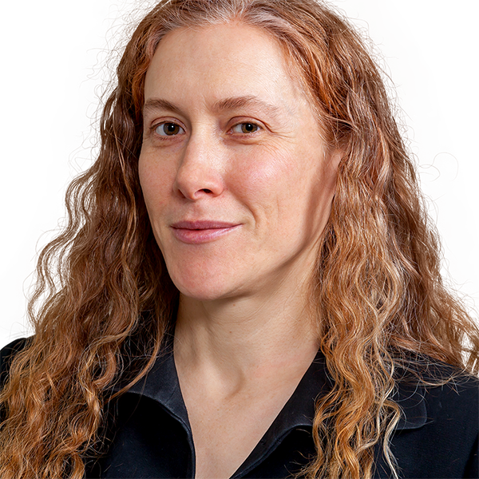
Linda CummingsDistinguished ProfessorFluid dynamicsliquid crystalsfree boundary problemsasymptoticsRaed DandanAdjunct InstructorRazan DandanAdjunct InstructorJoshua DavisAdjunct InstructorAbilio DeBarrosAdjunct InstructorJack DeGrootAdjunct Instructor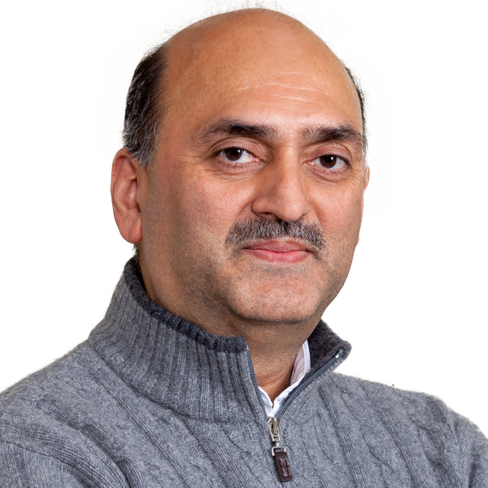
Sunil DharProfessorPharmaceutical StatisticalReliabilitySurvivalGeneralized Linear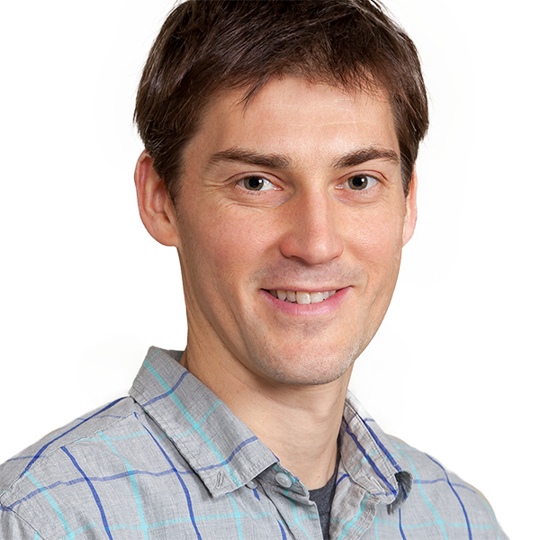
Casey DiekmanProfessordynamical systemsMathematical Neurosciencecircadian rhythmsMathematical BiologyAomar ElassaAdjunct InstructorRemoun EstfanousAdjunct InstructorThomas FalconerAdjunct InstructorRodley FergusonAdjunct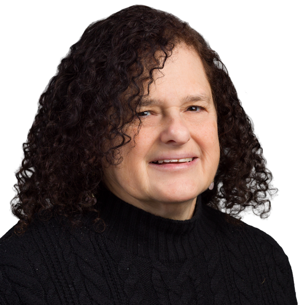
Amy FlaxUniversity LecturerRenzo FloresAdjunctChristina FrederickAssociate Professor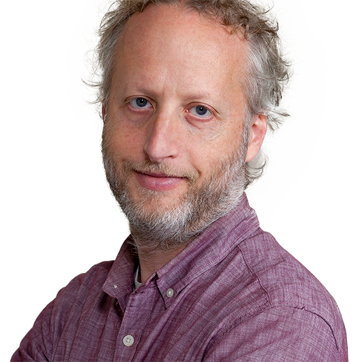
Roy GoodmanProfessorWave equationsdynamical systemsinvariant manifoldsnumerical computation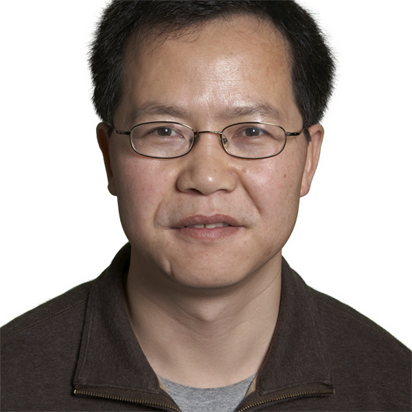
Wenge GuoAssociate ProfessorLarge-scale multiple testingSelective InferenceStatistical machine learningHigh-dimensional data analysisShalini GuptaAdjunct InstructorManuel Hercules-MenjivarAdjunct Instructor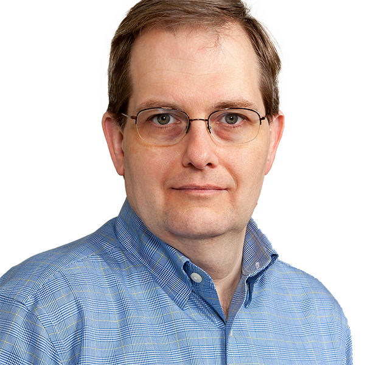
David HorntropAssociate ProfessorKenneth HorwitzSenior University LecturerVideo Data ResearchRepresentationsHeuristicsProblem Solving strategiesDaoud HusseinAdjunct InstructorFariborz JamedarAdjunct Instructor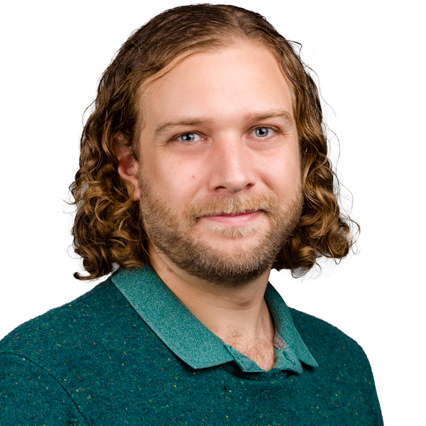
Jonathan JaquetteAssistant ProfessorNonlinear DynamicsComputer Assisted ProofsPartial Differential EquationsMathematical NeuroscienceJe Hyun RoSenior University LecturerJason JeanAdjunct InstructorJi Meng LohProfessorSpatial statisticsin particularthe analysis of spatial point patternsbootstrap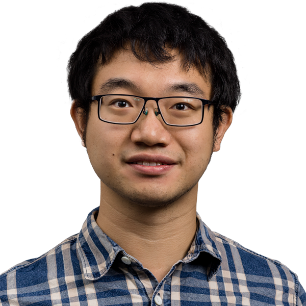
Chong JinAssistant ProfessorMulti-omics dataStatistical GeneticsMendelian randomizationCancer genomicsGeorge KariukiAdjunct InstructorChulmin KimSenior University Lecturer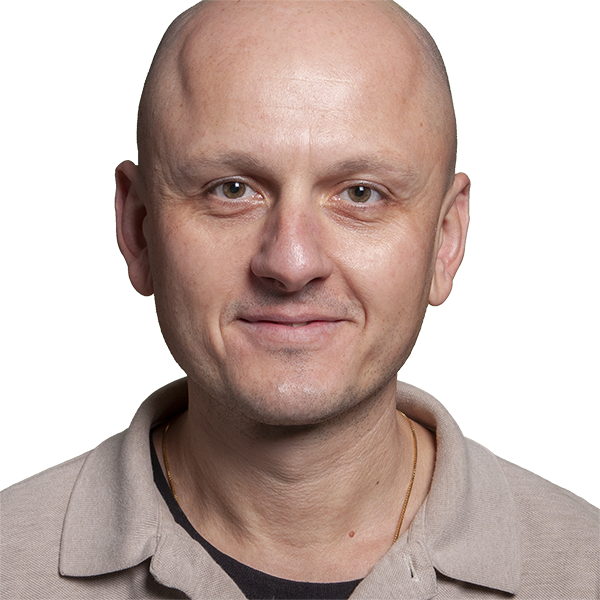
Lou KondicDistinguishedDADA ProfessorComputational Fluid Dynamicsthin liquid filmsMaterials Sciencegranular matter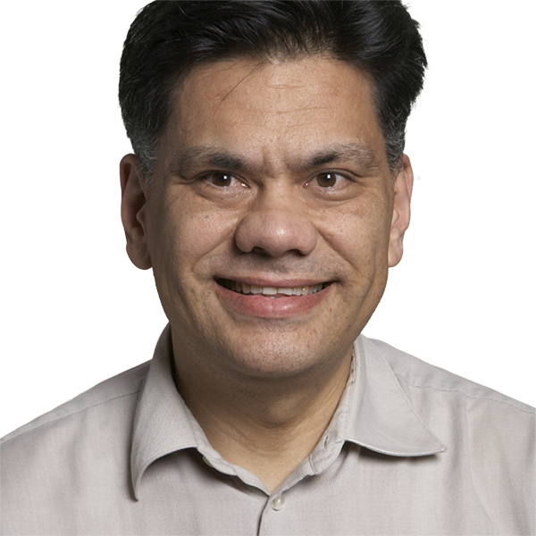
Jonathan LukeProfessor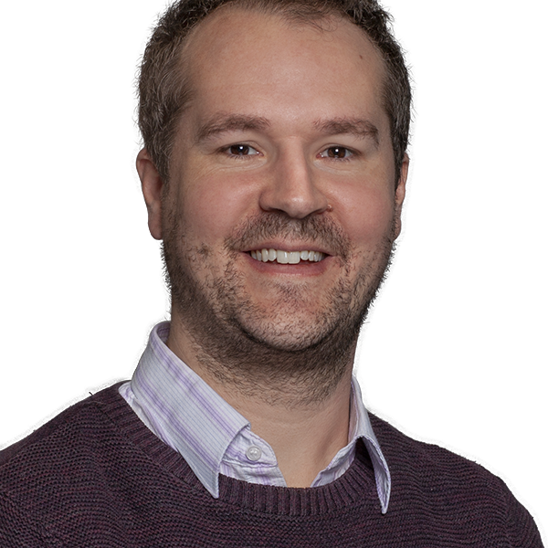
James MacLaurinAssistant ProfessorStochastic Interacting Particle ModelsMathematical BiologyTraveling Waves and Pattern Formation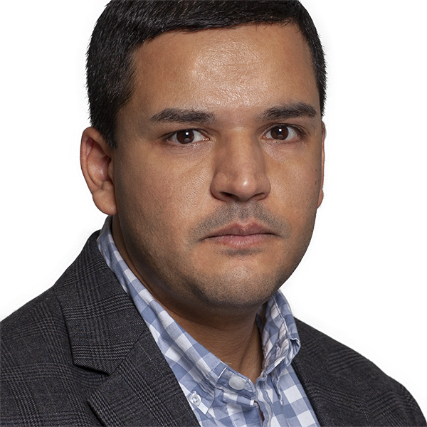
Sirag MahmoodSenior University Lecturer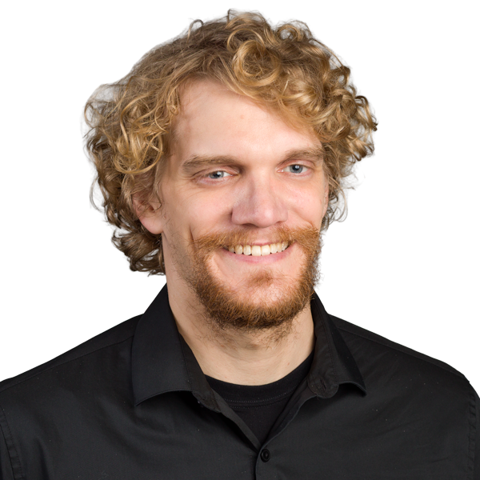
Daniel MassattAssistant ProfessorNumerical analysisspectral theoryquantum theoryelectronic structure of quantum materials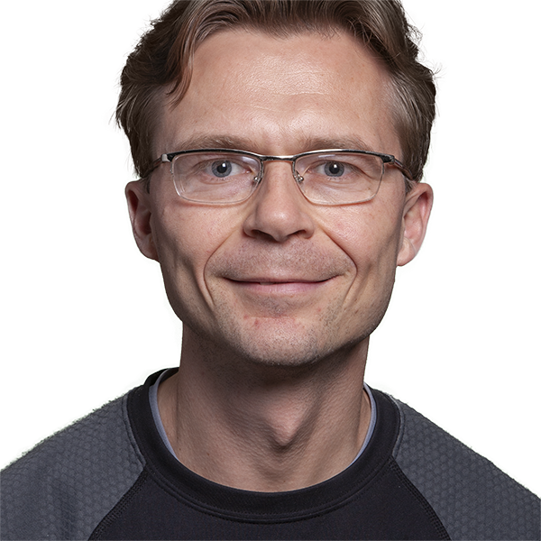
Victor MatveevProfessorCell BiophysicsComputational NeuroscienceSynaptic TransmissionCalcium DynamicsHoward McKenzieAdjunct Instructor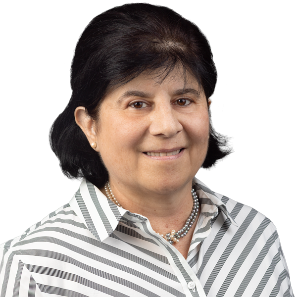
Zoi-Heleni MichalopoulouDistinguished ProfessorOcean acousticsinverse problemsMachine learningBayesian inference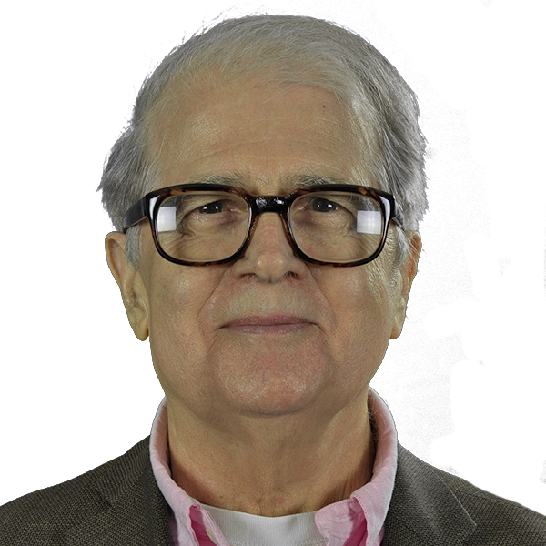
Petronije MilojevicProfessorNonlinear functional AnalysisNonlinear Differential Equations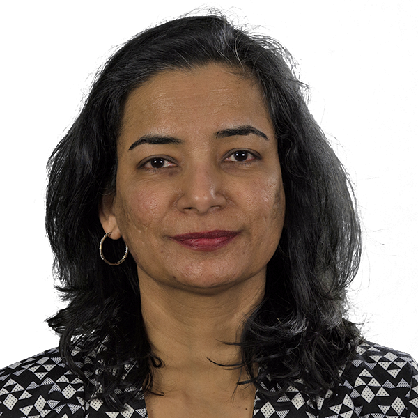
Sudha NairAdjunct Instructor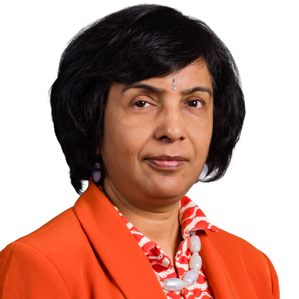
Padma NatarajanSenior University LecturerJoyce OkothAdjunct Instructor Anand OzaAssociate ProfessorApplied mathematicsfluid mechanicsSoft Matteractive matter
Anand OzaAssociate ProfessorApplied mathematicsfluid mechanicsSoft Matteractive matter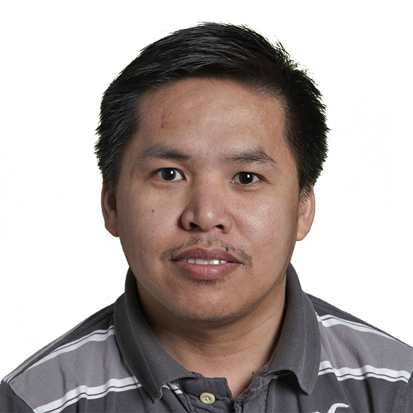
Benjamin PatiakAdjunct Instructor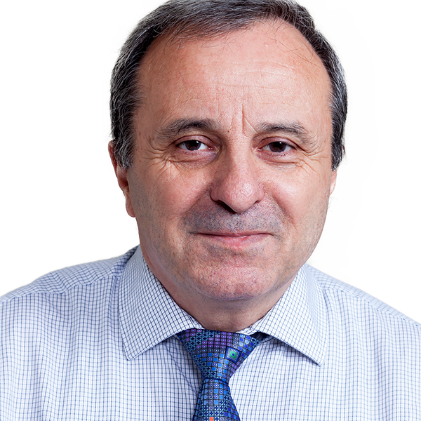
Ivaylo PeltekovAdjunct InstructorPeter PetropoulosAssociate Professorfluid mechanicswave propagationScientific ComputingApplied mathematics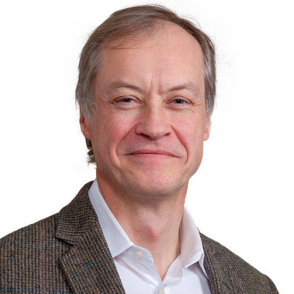
Andrew PoleSenior University LecturerShareef Porterfield-JacksonAdjunct InstructorMagdallena Potocki-DulSenior University LecturerPriyanka Rana ConcepcionUniversity LecturerPaulette RodriguezAdjunct InstructorAmir SagivAssistant ProfessorUncertainty QuantificationMeasure TransportSampling Algorithms Quantum MechanicsCondensed Matter PhysicsCaroline SaltersAdjunct InstructorMario SampedroAdjunct Instructor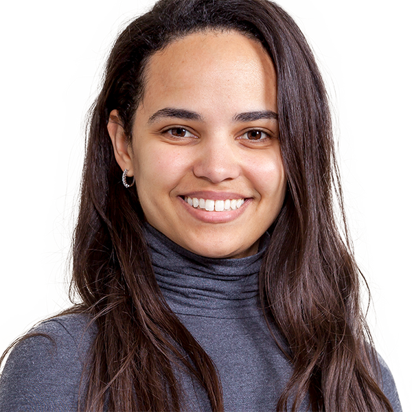
Donivyn SchmidtSenior University LecturerZuofeng ShangAssociate ProfessorLearning TheorySemi/NonparametricsBayesian NonparametricsChenlu ShiAssistant ProfessorBig Data Reduction and AnalysisComputer ExperimentsExperimental DesignHyperparameter Optimization for Deep LearningDavid ShirokoffAssociate ProfessorPartial Differential EquationsVariational problemsNumerical methodsTime integration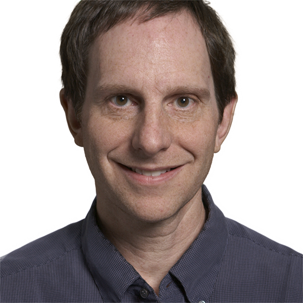
Michael SiegelProfessorApplied mathematicsScientific ComputationFluid dynamicsMaterials Science Sundarraman SubramanianAssociate ProfessorProbabilitystatisticsmathematicsYan SunAssistant ProfessorMachine learningstatistics
Sundarraman SubramanianAssociate ProfessorProbabilitystatisticsmathematicsYan SunAssistant ProfessorMachine learningstatistics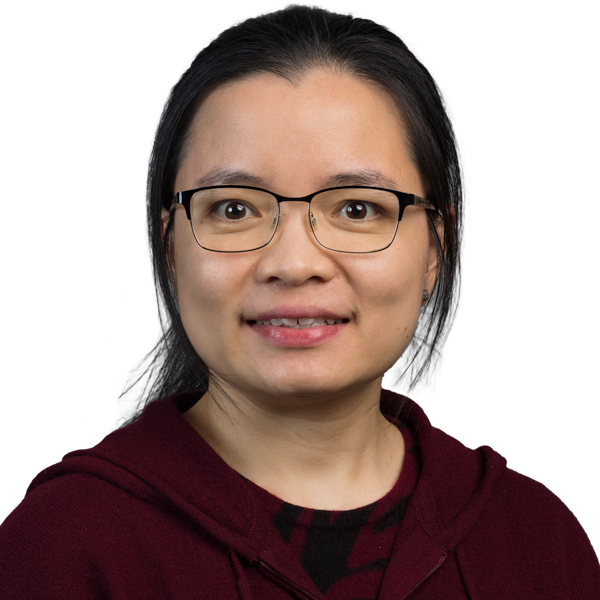
Thi Phong NguyenAssistant ProfessorInverse problems and imagingdirect and inverse scatteringnumerical methods for PDEsScientific ComputingNatalya TsipenyukAdjunct Instructor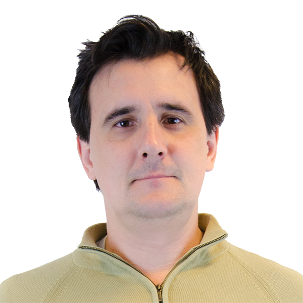
Catalin TurcProfessorScientific ComputingNumerical analysiscomputational electromagnetics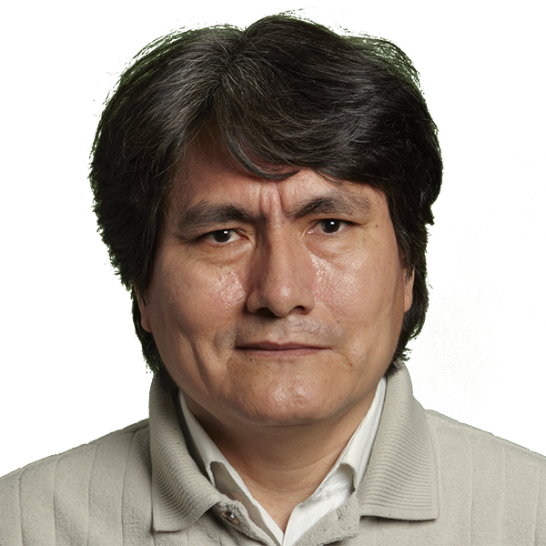
Victor Barreto ArandaAdjunct InstructorAntai WangAssociate ProfessorSurvival Analysis and Multivariate AnalysisPeter WardSenior University Lecturer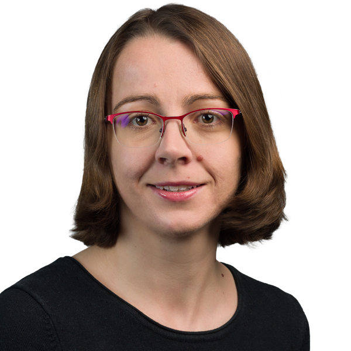
Kristina WickeAssistant ProfessorMathematical PhylogeneticsGraph TheoryCombinatorics Yuan-Nan YoungProfessorFluid-Structure InteractionsStokes Flowsbiophysics
Yuan-Nan YoungProfessorFluid-Structure InteractionsStokes Flowsbiophysics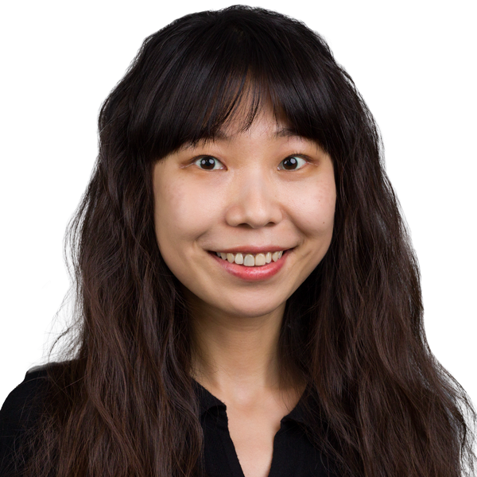
Xinyu ZhaoAssistant ProfessorNonlinear WavesPDE-Constrained OptimizationScientific ComputingFluid dynamicsProfessors
Linda CummingsDistinguished ProfessorFluid dynamicsliquid crystalsfree boundary problemsasymptoticsShahriar AfkhamiProfessorComputational Fluid MechanicsScientific Computing and Parallel ComputingComplex FlowsComplex FluidsJohn BechtoldProfessorApplied mathematicsCombustionMichael BootyProfessorI work in various areas of physical applied mathematicswhereApplied mathematicsAmitabha BoseProfessorYassine BoubendirProfessorBruce BukietProfessorMathematical modeling of physical phenomenaincluding biological applicationsfluid dynamics and sportsMathematical modelingWooyoung ChoiProfessorApplied Mathematics: Nonlinear waves and Fluid mechanicsMichelle CirilloProfessordiscourseproofgeometrymodelingSunil DharProfessorPharmaceutical StatisticalReliabilitySurvivalGeneralized LinearCasey DiekmanProfessordynamical systemsMathematical Neurosciencecircadian rhythmsMathematical BiologyRoy GoodmanProfessorWave equationsdynamical systemsinvariant manifoldsnumerical computationJi Meng LohProfessorSpatial statisticsin particularthe analysis of spatial point patternsbootstrapLou KondicDistinguishedDADA ProfessorComputational Fluid Dynamicsthin liquid filmsMaterials Sciencegranular matterJonathan LukeProfessorVictor MatveevProfessorCell BiophysicsComputational NeuroscienceSynaptic TransmissionCalcium DynamicsPetronije MilojevicProfessorNonlinear functional AnalysisNonlinear Differential EquationsMichael SiegelProfessorApplied mathematicsScientific ComputationFluid dynamicsMaterials ScienceCatalin TurcProfessorScientific ComputingNumerical analysiscomputational electromagneticsYuan-Nan YoungProfessorFluid-Structure InteractionsStokes FlowsbiophysicsAssociate Professors
Christina FrederickAssociate ProfessorWenge GuoAssociate ProfessorLarge-scale multiple testingSelective InferenceStatistical machine learningHigh-dimensional data analysisDavid HorntropAssociate ProfessorAnand OzaAssociate ProfessorApplied mathematicsfluid mechanicsSoft Matteractive matterPeter PetropoulosAssociate Professorfluid mechanicswave propagationScientific ComputingApplied mathematicsZuofeng ShangAssociate ProfessorLearning TheorySemi/NonparametricsBayesian NonparametricsDavid ShirokoffAssociate ProfessorPartial Differential EquationsVariational problemsNumerical methodsTime integrationSundarraman SubramanianAssociate ProfessorProbabilitystatisticsmathematicsAntai WangAssociate ProfessorSurvival Analysis and Multivariate AnalysisAssistant Professors
Travis AskhamAssistant ProfessorNumerical analysisScientific ComputingFast AlgorithmsJonathan JaquetteAssistant ProfessorNonlinear DynamicsComputer Assisted ProofsPartial Differential EquationsMathematical NeuroscienceChong JinAssistant ProfessorMulti-omics dataStatistical GeneticsMendelian randomizationCancer genomicsJames MacLaurinAssistant ProfessorStochastic Interacting Particle ModelsMathematical BiologyTraveling Waves and Pattern FormationDaniel MassattAssistant ProfessorNumerical analysisspectral theoryquantum theoryelectronic structure of quantum materialsAmir SagivAssistant ProfessorUncertainty QuantificationMeasure TransportSampling Algorithms Quantum MechanicsCondensed Matter PhysicsChenlu ShiAssistant ProfessorBig Data Reduction and AnalysisComputer ExperimentsExperimental DesignHyperparameter Optimization for Deep LearningYan SunAssistant ProfessorMachine learningstatisticsThi Phong NguyenAssistant ProfessorInverse problems and imagingdirect and inverse scatteringnumerical methods for PDEsScientific ComputingKristina WickeAssistant ProfessorMathematical PhylogeneticsGraph TheoryCombinatoricsXinyu ZhaoAssistant ProfessorNonlinear WavesPDE-Constrained OptimizationScientific ComputingFluid dynamicsSenior Lecturers
Egbert AmmichtAdjunct InstructorHooman BehzadpourAdjunct InstructorGeorge BekhitAdjunct InstructorSarah BlansetSenior University LecturerPrianka BoseAdjunct InstructorTrang BuiSenior University LecturerManasse CadetAdjunct InstructorSunletha CarterAdjunct InstructorIon CohanoschiAdjunct InstructorPaul CorreiaAdjunct InstructorRaed DandanAdjunct InstructorRazan DandanAdjunct InstructorJoshua DavisAdjunct InstructorAbilio DeBarrosAdjunct InstructorJack DeGrootAdjunct InstructorAomar ElassaAdjunct InstructorRemoun EstfanousAdjunct InstructorThomas FalconerAdjunct InstructorRodley FergusonAdjunctRenzo FloresAdjunctShalini GuptaAdjunct InstructorManuel Hercules-MenjivarAdjunct InstructorKenneth HorwitzSenior University LecturerVideo Data ResearchRepresentationsHeuristicsProblem Solving strategiesDaoud HusseinAdjunct InstructorFariborz JamedarAdjunct InstructorJe Hyun RoSenior University LecturerJason JeanAdjunct InstructorGeorge KariukiAdjunct InstructorChulmin KimSenior University LecturerSirag MahmoodSenior University LecturerHoward McKenzieAdjunct InstructorSudha NairAdjunct InstructorPadma NatarajanSenior University LecturerJoyce OkothAdjunct InstructorBenjamin PatiakAdjunct InstructorIvaylo PeltekovAdjunct InstructorAndrew PoleSenior University LecturerShareef Porterfield-JacksonAdjunct InstructorMagdallena Potocki-DulSenior University LecturerPaulette RodriguezAdjunct InstructorCaroline SaltersAdjunct InstructorMario SampedroAdjunct InstructorDonivyn SchmidtSenior University LecturerNatalya TsipenyukAdjunct InstructorVictor Barreto ArandaAdjunct InstructorPeter WardSenior University LecturerNo faculty match “”.